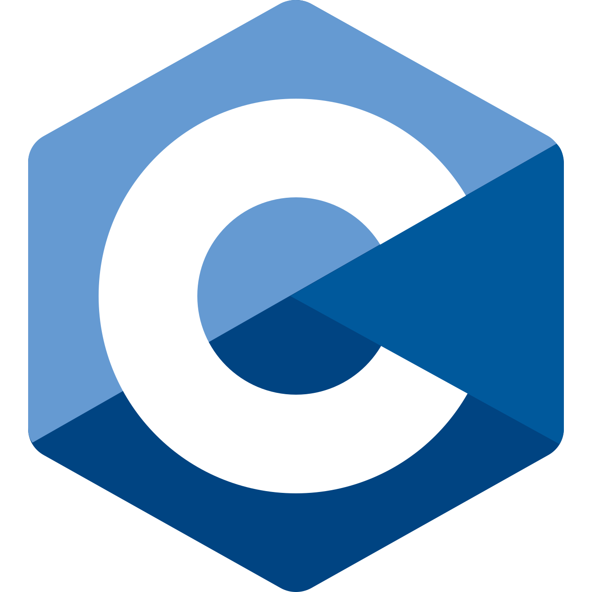
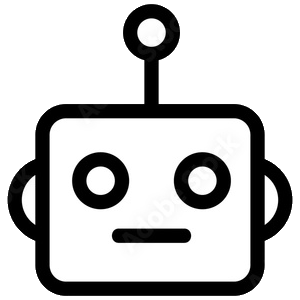
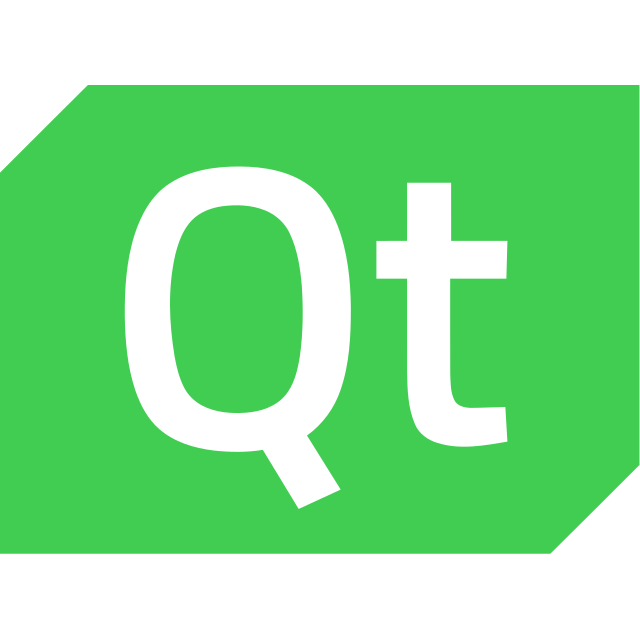
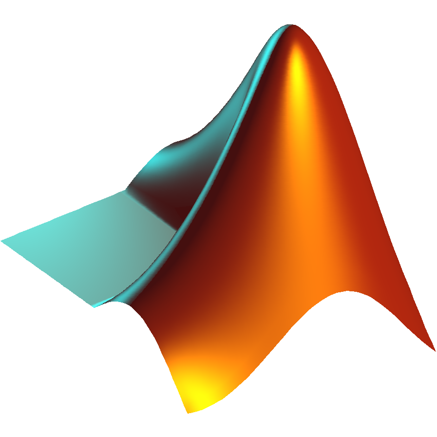
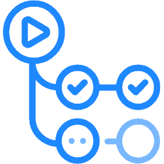
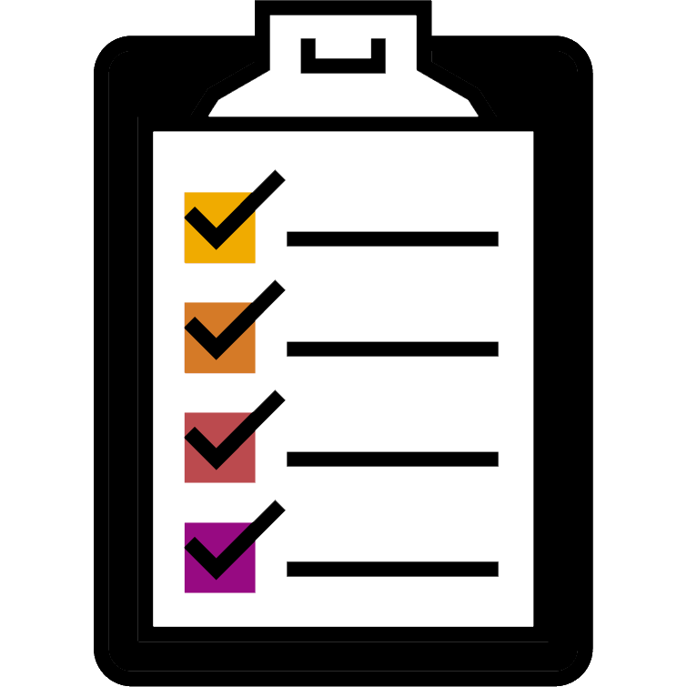
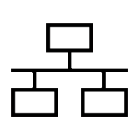
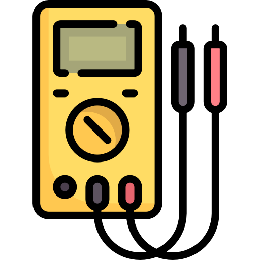

About Me
I am a software engineer. My main area of expertise is working with close-to-hardware C/C++ code and working with autonomous systems. In my work, I welcome the challenges of solving problems and architecting complex systems.
laptop_chromebookExperience
-
AuterionRemoteOct. 2022 - Present
-
Senior Software Engineer
Feb. 2024 - Present -
Software Engineer
Oct. 2022 - Feb. 2024
- Develop software in C/C++ for Auterion's government programs, including QGC-Gov, a Qt/QML-based ground control station for unmanned aerial systems (UAS).
- Work closely with the DoD's Defense Innovation Unit on Artificial Intelligence for Small Unit Maneuver (AISUM) program to develop a "swarm controller" for multivehicle, autonomous UAS operations.
- Plan and execute a complete redesign of the QGC-Gov frontend and backend to better support the needs of multivehicle autonomy, extensibility and modularity, system-level mission planning, and more.
- Collaborate with industry partners to develop RAS-A, an interoperable standard used across the government's UAS portfolio.
-
Senior Software Engineer
-
Vermeer CorporationPella, IAMay 2018 - Oct. 2022
-
Embedded Software Engineer II
May 2021 - Oct. 2022 -
Embedded Software Engineer I
May 2019 - May 2021 -
Embedded Software Engineer Co-Op
May 2018 - May 2019
- Developed machine control software for Vermeer's next generation horizontal directional drills using C/C++ and Simulink and display software in Qt/QML.
- Architected the software, hardware, and system integration of a common platform for all next-generation horizontal directional drills, designing for current and future needs such as automation and operator-less machines.
- Worked extensively on common hardware abstraction layer C code, integrating multiple hardware variants into a consistent core layer.
- Introduced CI/CD workflows using Github Actions, replacing manual builds and tests.
- Collaborated with hardware vendors to introduce new controller hardware, purpose-built for Vermeer's needs, and oversee its adoption into the existing programming environment.
- Developed a communication scheme based on SAE J1939 DM14-DM16 messages for automatic adjustment, retention, and secure transferal of protected parameters between machine control units.
- Completed an accelerated project to update port legacy software to new hardware when supply chain constraints threatened key product lines.
-
Embedded Software Engineer II
-
Garmin InternationalOlathe, KSOct. 2015 - Aug. 2016
- Embedded Software Intern, Aviation
- Worked as part of a team to develop kernel layer drivers and interfaces for Garmin's G1000-G5000 series cockpit display solutions.
- Completed a refactor of part of Garmin's module testing environment to allow for enhanced software verification at the system level.
-
The Boeing CompanySt. Louis, MOMay 2015 - Aug. 2015
- IT Intern, Business Systems Data Warehouse & Analytics
- Gained experience working in a large corporate environment.
- Assisted in updating and transferring finance web portal code.
schoolEducation
-
Master's of Computer EngineeringMissouri University of Science & TechnologyRolla, MO2017 - 2019Emphasis in Embedded Systems
-
Bachelor's of Computer EngineeringMissouri University of Science & TechnologyRolla, MO2013 - 2017Minors in Mathematics & Computer Science
constructionSkills

C / C++ Programming
Linux

Autonomy / Autonomous Systems

Qt / QML
Git

Matlab / Simulink

CI / CD

Unit Testing
Software Requirements

SAE J1939
CAN bus
CAN bus
Jira Project Management

Electronic Test Equipment
GStreamer / Embedded Video
personPersonal Life
I currently live in the lovely, historically Dutch town of Pella, Iowa.
My hobbies include playing the oboe! I enjoy playing with community bands & orchestras whenever I
can.
I live with my 3 year-old resuce dog, Ada, who is full of energy!
In my free time, I like tinkering with home improvement and putting my programming skills to use
with home automation.